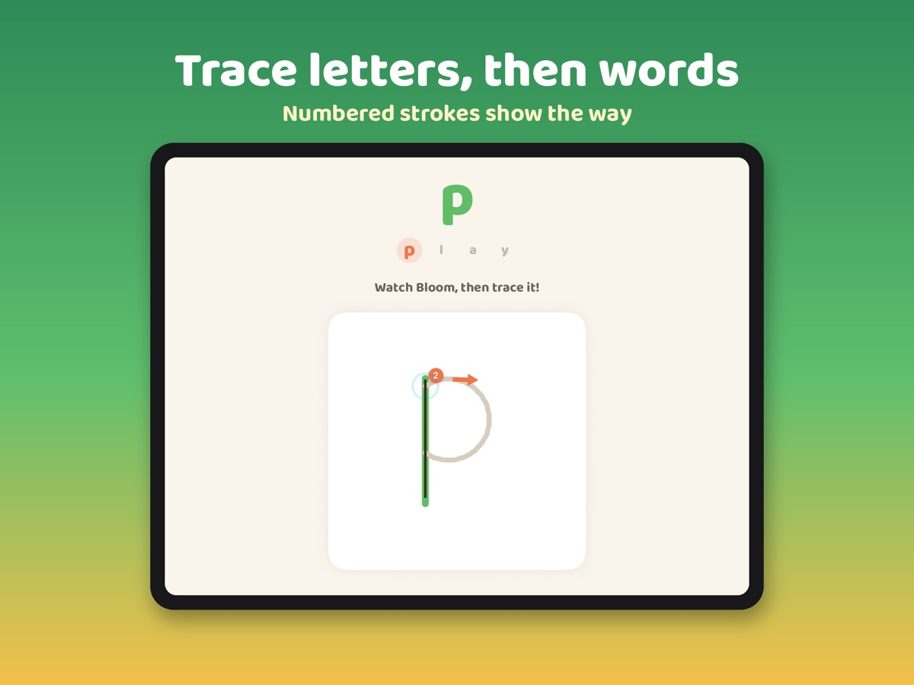
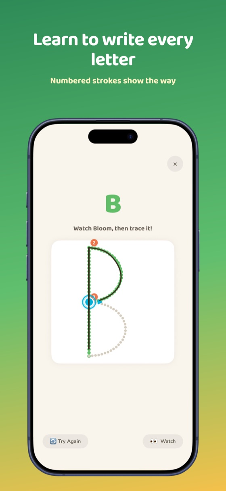
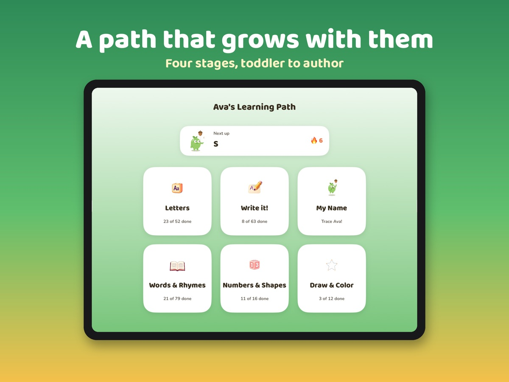
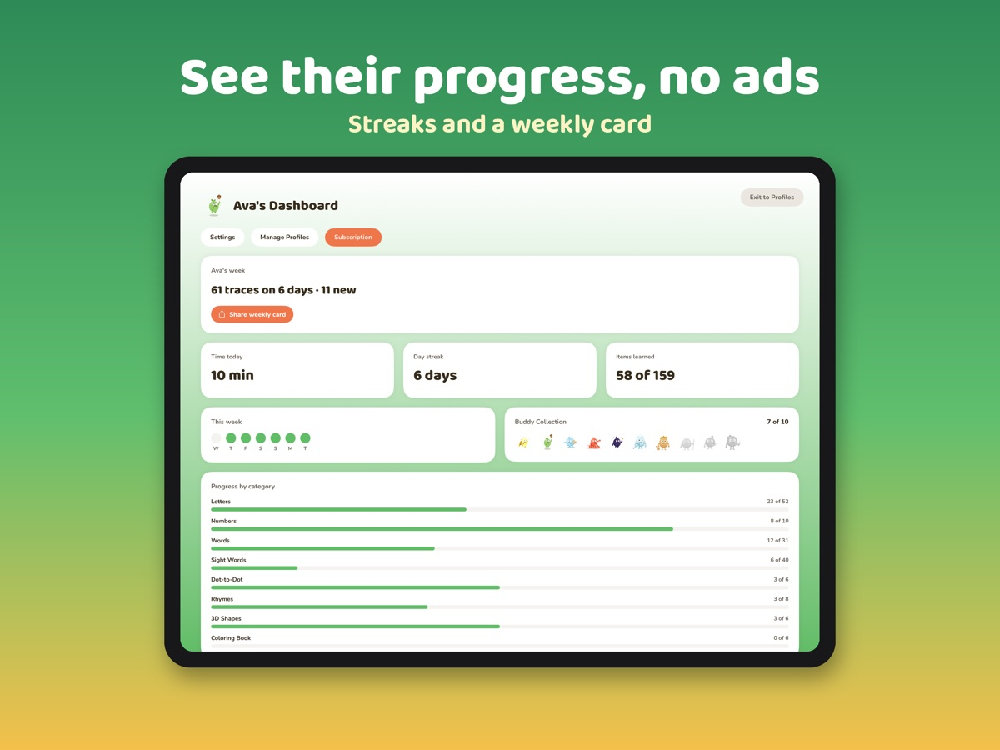
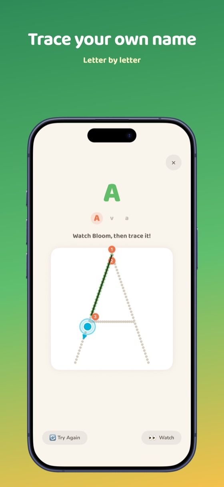

Handwriting practice that shows where each stroke starts
TinyTracer is a kids handwriting app for iPad and iPhone, made for toddlers, preschoolers and kindergartners learning to write. Made for iPad first, with iPhone too. Numbered guides show where every letter and number starts, so your child moves from tracing to writing from memory. No ads. No account.
Letter and shape tracing are free. Premium unlocks the rest.


Trace it, write it, print it
Trace it
Letter tracing and number tracing with numbered strokes and arrows that show the stroke order. Use a finger or Apple Pencil, and hear the letter name, its sound and a real word.
Write it!
Handwriting practice without the guide. Your child writes a letter or number from memory, earns up to 3 stars, and compares their try with the model.
Print tracing sheets
Parents can print sheets with your child's name, an A–Z chart, capitals, lowercase and numbers, with numbered start dots and arrows. The PDF is made on your phone or iPad. Nothing is sent to us. Printing is available on Tracer and Author profiles. Get two free sheets to print.
What's free, what's Premium
Free
- Letter and shape tracing
- Matching games and pattern practice
- A sample of every other section, including Write it!
- Printable name sheet, A–Z chart and capitals sheet (free PDFs to download)
Premium
- All numbers, words, sentences, sight words and simple math
- Every Write it! letter and number
- Coloring pages, dot-to-dot, missions, rhymes and 3D shapes
- Every printable sheet: lowercase, numbers and my letters
Annual and Monthly start with a 7-day free trial for eligible new subscribers. Weekly has no trial. Prices are shown in the App Store. Cancel any time in your device's Settings.
Letter tracing and name tracing on iPad and iPhone



For parents
No ads, no account, no tracking
There's no sign-in and no ads. There are no third-party trackers or analytics in the app. Your child's profiles stay on your device and in your own iCloud. We never see them.
Parent Gate
Purchases, settings and the Parent area sit behind a short check where a grown-up types a number written out in words.
Parent Dashboard
See what your child practiced, for how long, their streaks, and a weekly card you can send to family.
Four stages, from first scribbles to sentences
Toddler
First pencil control, big shapes and counting.
Pre-Writer
Dot-to-dot, guided pre-writing shapes, matching games and pattern practice.
Tracer
The full alphabet, numbers, words, sight words, phonics, Write it!, rhymes and 3D shapes.
Author
Writing whole sentences, plus simple math.
Questions parents ask
Is TinyTracer free?
Letter and shape tracing, matching games and pattern practice are free, with a free sample of every other section. Premium unlocks the rest.
Does my child need an account?
No. There is no sign-in. Profiles stay on your device and, if you use iCloud, in your own iCloud account.
What ages is it for?
Kids learning their first letters, roughly toddler through kindergarten, with four stages from first scribbles to sentences. Some older kids who are still practicing letter formation enjoy it too, though the style is bright and playful, so very confident writers may find it too easy. The App Store lists TinyTracer as Made for Ages 0–5, which is Apple's Kids category label.
My child writes b and d backwards. Will this help?
We can't promise it will fix it. Every letter starts at a numbered dot with an arrow, so b and d start in different places each time. Many young children reverse letters. If you're worried, ask their teacher or doctor.
Does it teach pencil grip?
No. A finger or Apple Pencil on glass isn't the same as a pencil on paper. That's one reason the printable sheets exist: print one and practice with a real pencil.
Is it OK for left-handed children?
Tracing works with either hand. A left-handed layout isn't in the app yet, and it's planned for a later update.
Does it need an Apple Pencil?
No. A finger works. Apple Pencil works on iPad if you have one.
How do I cancel a subscription?
In the Settings app, tap your name, then Subscriptions, then TinyTracer. Subscriptions are managed by Apple.
Try it
Letter and shape tracing are free to start.